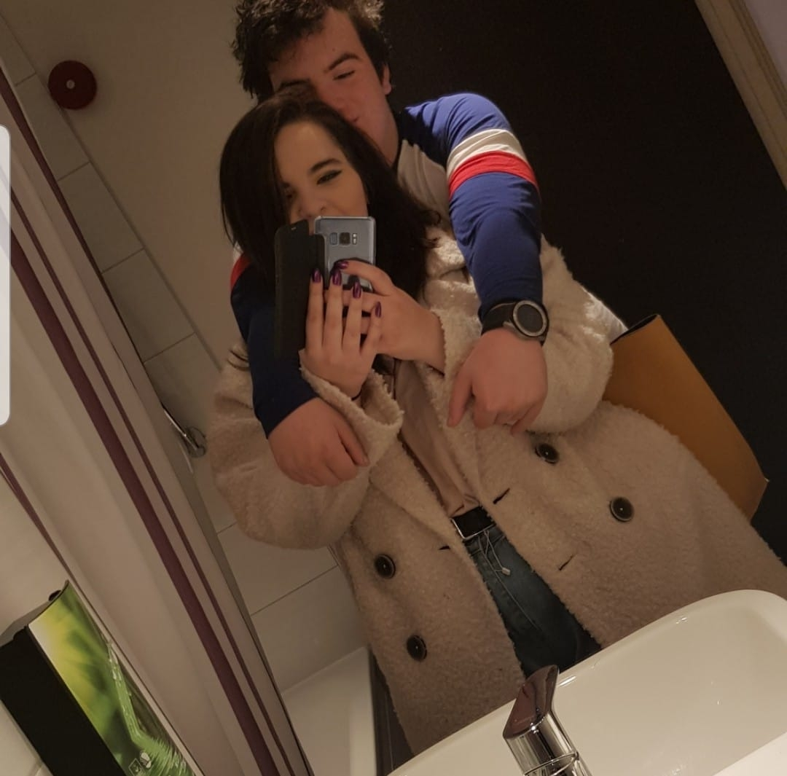

Hi! Welcome to my website! Here you will find a bunch of
random stuff mashed together to try to complete this website.
About Me
My name is Carmen, I am based in Northamptonshire but currently studying Media Production at DMU in Leicester.
Born in 2000, my interests over the past 20 years have flourished into many different strands such as:
Music
Astrology
Gaming
When I was younger I was deeply into music but when I turned 15, my hobbies developed into learning media production.
But why? After having multiple set-backs with preforming, I found that creating a story within film is also a great
way to be myself without having to worry about anything. Fast forward to now, I'm in Uni trying to create a website
from scratch. Never thought I would end up doing this. If your new to this and reading this, warning, its complicated...
The end goal is for me to become a teacher within Media, whether it be university level or college. I would
love the opportunity to shape young peoples minds and enable them to share their own stories just like I have.
That kinda sounds cringy did'nt it...
